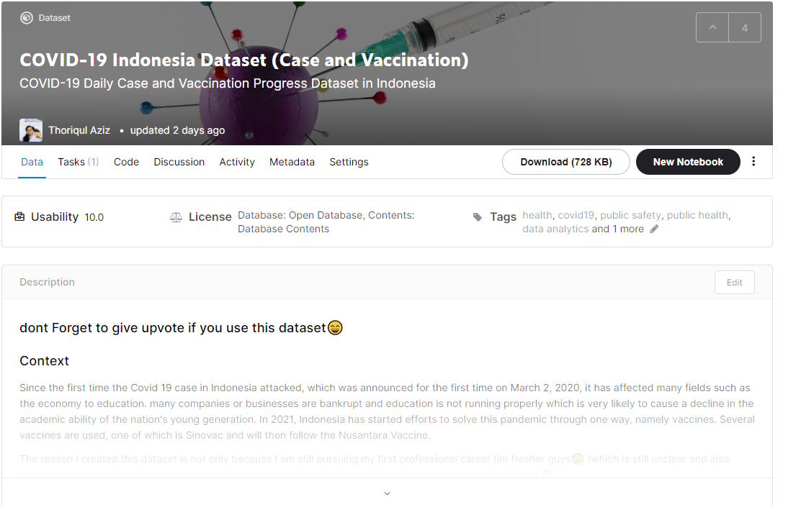

COVID-19 Indonesia Dataset
Case and Vaccination

Case and Vaccination
On March 2, 2020, Indonesia had the first case of COVID-19, which has continued to increase, with a total of more than 1 million positive cases. More than 30 thousand people died with the total number of active cases was too many, causing the hospital occupancy capacity to run low. The government through the ministry of health, the national disaster management agency (BNPB), and the provincial government have carried out various initiatives to provide information regarding the spread of covid cases in each region using an integrated website, namely covid.19.go.id and several websites for information on the spread of COVID-19 at each province.
With the help of data information from the website, I am trying to access data using several tools such as python programming which can be added to libraries such as selenium and BeautifulSoup. Some of the data I have accessed is apart from data related to the addition of daily cases and also the progress of vaccination in each region.
So far I have succeeded in scraping national data related to daily covid cases in each province through the covid19.go.id website and also data on the distribution of vaccines in the province of East Java. In the future, I will try again to get data on the spread of covid cases to the district level if information and websites are available.
I hope that this data can make it easier for the Indonesian community to visualize and find data insights and their implications for other things, both personally and organizationally. Further information regarding the data can be seen here